Chapter 12
The diagonal
12.1 Introduction
When, as a student, I applied for the Eindhoven Chess Club, which participated in the Major League (nowadays called the Master League) of the Dutch club competition, I made the acquaintance of a player who was reputed at our club to be an excellent strategist.
This player, Jos Sutmuller, turned out to be a great fan of former World Champion Tigran Petrosian. He told me that he had worked through Peter H. Clarke’s book Petrosian’s Best Games of Chess 1946-63 twice. ‘It’s always lying in my bathroom!’, he laughingly informed me at the time.
Sutmuller uses the club competition to put his ideas, which are quite strange in the eyes of an outsider, into practice. I once saw him carry out the following manoeuvres.
FR 16.1 (C05)
1.e4 e6 2.d4 d5 3.♘d2 ♘f6 4.e5 ♘g8
A bizarre move. Black hopes to compensate for his lag in development and space with a healthy pawn structure and a harmonious set-up of his pieces. The knight strives for the beautiful f5-square. However, common opinion claims that the loss of time does outweigh the advantages.
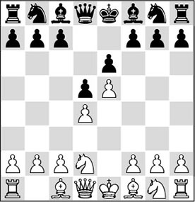
5.♗d3 c5 6.c3 cxd4 7.cxd4 ♕b6 8.♘e2 ♗d7 9.0-0
Perhaps 9.a4 is to be recommended here.
9…♗b5 10.♗b1
For the moment White refuses to give up his good bishop. 10.♗xb5+ ♕xb5 11.♘c3 ♕b6 12.♘f3, in order to try to exploit the lead in development that White has built up, seems preferable.
10…♕a6!? 11.♖e1 ♗d3 12.♗xd3 ♕xd3
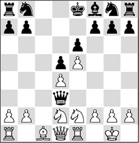
Black has used his last five (!) moves to trade his bad bishop for White’s good one. This loss of time is compensated for by the fact that the exchange has taken the sting out of White’s possible attack. Additionally, the pawn on d4 is a target, and the bishop on c1 will not be able to develop any activity anywhere.
13.♕b3
Perhaps White should have kept the queens on the board with 13.♕a4+ ♘c6 14.♘f3. In this position he would have better chances to put his lead in development to good use.
13…♕xb3 14.♘xb3 ♘c6 15.♗d2 ♘ge7 16.♖ac1
In a game Benschop-Sutmuller, Eindhoven 1990, there followed 16.♖ec1 ♘f5 17.♗e3 f6!, and White lost her influence in the centre.
16…♘f5 17.g4?!
Not only a weakening move; it also gives Black a point of attack to open the h-file, and Sutmuller seizes it with both hands.
17…♘h4 18.♖ed1 h5 19.h3
The ugly 19.g5 would have been better.
19…♗e7 20.♖c3 ♔d7 21.f4 hxg4 22.hxg4 ♖h7 23.♘c5+?!
This exchange favours Black.
23…♗xc5 24.dxc5 ♖ah8 25.♔f2
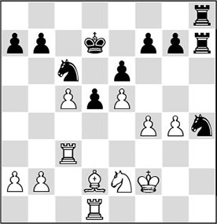
25…g5!
Pulling away the ground beneath White’s feet.
26.♖b3 ♔c8 27.♗c3?
Here 27.♖h3 was relatively better. But it’s still not exactly a picnic.
27…♘g6 28.fxg5 ♖h2+ 29.♔e1 ♖8h3 30.♖a3 ♖e3 31.♖d2 ♘f4
0-1
After the game I asked Sutmuller how he could justify such time-consuming manoeuvres. His reply was: ‘I cannot really play chess that well, but I do know what good and bad bishops are. And with that knowledge I can hold my own quite nicely in the highest Dutch league.’
Of course this was a jocular statement. But then, in another match, I saw how he brought the following opening variation on the board with black:
1.e4 e6 2.d4 d5 3.e5 c5 4.c3 ♕b6 5.♘f3 ♗d7 6.♗e2 cxd4 7.cxd4 ♗b5
And on the following move he traded off the light-squared bishops.
Then an amazing scene unravelled. Players from the Eindhoven team approached him and congratulated Sutmuller on his win. Now that he had traded his bad bishop for White’s good one, everybody was apparently convinced that the win would only be a matter of time. The opposite team was naturally surprised by this small show, but some six hours later the 0-1 result was indeed written on the scoreboard. The white player had succumbed to the weakness of his light squares…
Is it possible to win a game solely on the basis of these static factors? From chess history we know that players like Capablanca, Petrosian and later also Timman and Andersson were indeed capable of taking all dynamics from a position and attaining an advantage purely on the basis of static plusses. Let us restrict ourselves to the theory of the good and the bad bishop for the moment.
Definition:
- A bishop is bad if its own pawns are fixed on the colour that is controlled by this bishop.
The diagram given below illustrates this:
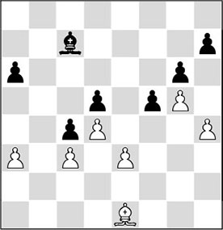
From the definition, we can conclude that a bishop is always hampered by a pawn of its own side if it is on the same colour. The activity of the bishop increases, the more open diagonals it has at its disposal.
Another important characteristic of the bishop is that it can operate from a great distance, contrary to the knight. Here is another diagram to illustrate this.
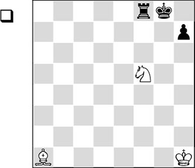
1.♘h6#
Whether the bishop is on e5, f6 or a1, the mate picture remains unchanged. As a rule it is even pleasant for the bishop to be far away. This makes it harder to attack it (i.e., it is less vulnerable), while it is able to perform the same task.
In the book How to Open a Chess Game, where various grandmasters were asked to explain ‘in public’ how they approached the opening, I read an interesting fragment worked out by grandmaster Gligoric. In short, it came down to the following.
After the opening moves
1.e4 e5 2.♘f3 ♘c6
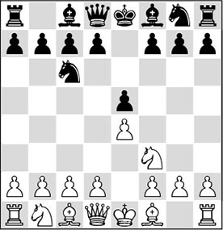
the grandmaster from former Yugoslavia tries to explain why the Ruy Lopez (3.♗b5) is more popular with grandmasters than 3.♗c4, which mostly results in an Italian Opening. However, in the Ruy Lopez, after the usual moves 3…a6 4.♗a4 ♘f6 5.0-0 ♗e7 6.♖e1 b5 7.♗b3, the bishop ends up on the desired diagonal after all. Still, this doesn’t answer the question: why not go to that diagonal right away? Judging by the features of the position we might expect that the bishop would rather be developed on the a2-g8 diagonal, since Black has weakened this diagonal with his first move 1…e7-e5. In the Ruy Lopez, the bishop in fact ‘slides on’ to b5, which looks less logical.
3.♗c4 ♗c5 4.c3 ♘f6 5.d4 exd4 6.cxd4 ♗b4+ 7.♗d2 ♗xd2+ 8.♘bxd2
Gligoric explains that in this line, at first sight White has achieved everything he could ever achieve in the Italian Opening. He has eliminated the pawn on e5, which has given him a mobile centre (which may lead to attacking chances later – see Chapter 11), and he has a (slight) lead in development. If White were allowed to make one more move (preferably e4-e5), Black would be trampled under foot. Unfortunately Black puts a spanner in the works with the following annoying counter-thrust:
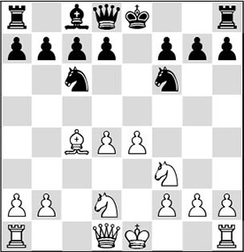
8…d5!
Now White is more or less forced to play
9.exd5 ♘xd5
and regretfully he has to conclude that his beautiful dreams turn out to be an illusion.
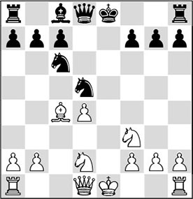
His ‘proud’ pawn centre has been blown to smithereens; instead he is now stuck with an isolated pawn on d4, which can be neatly blockaded by the black pieces (…♗c8-e6, …♘c6-e7, …c7-c6, and the strong d5-square is firmly in Black’s hands). According to opening theory the position is still balanced, but in practice there is hardly a grandmaster who enters this variation with white.
Gligoric explains that the white bishop is ‘too close’. On c4, it is vulnerable, which enables Black to equalize in one blow with the 9…d5 break. Gligoric adds that if in the first diagram position the bishop had ‘coincidentally’ stood on b3, Black would not have achieved the same with …d7-d5. Since the bishop is standing ‘at a distance’ (so that’s what this is about!), White can meet …d7-d5 with e4-e5, after which his centre remains intact and he can play for an attack later on.
This allows us to formulate two important strategic principles.
1) The queen, rook and bishop work best from a distance; king, knight and pawn have a smaller range of action.
2) For the queen, rook and bishop to operate optimally, open files, ranks and diagonals are needed.
In this chapter we will look at open diagonals only.
The action range varies for queen, rook and bishop. With operations on the other wing, the bishop will mainly fulfil a supporting function.
From the second principle we can deduce that bishops prefer not to have centre pawns standing right in front of them; not their own pawns, and preferably no enemy pawns either. In general we can say that a bishop does not particularly like obstacles (see 12.3). In the next section we will investigate this subject matter more closely.
12.2 Bishops work from a distance
In several examples in this book we have seen that bishops like to do their job from a great distance.
In an earlier diagram, which showed the mating motif with knight and bishop, we saw that on a1 the bishop fulfilled the same function as on most of the other squares on the long diagonal. However, on e5 it would be much more vulnerable than on a1.
It is useful to make a distinction between the employment of the bishop in the middlegame and in the endgame. In the middlegame, the bishop supports actions on the other wing. In this book we restrict ourselves to the treatment of a few attacks on the king.
In the endgame, we will mainly deal with the types of positions that the side with the bishop should strive for.
A) The bishop in the middlegame
In some openings we see a player immediately develop his bishop to a long diagonal. This is called the ‘fianchetto’ of a bishop. The player who does this, waits before pushing his centre pawns, and intends to make use of the long bishop diagonal later on in the middlegame.
Of course there are opening systems where a fianchettoed bishop is the key piece for an attack on the king. We know, for instance, the Dragon Variation of the Sicilian Defence, where Black cherishes his bishop on g7, sometimes even at the cost of an exchange.
In the following game we see Black make elegant use of the diagonals after he has managed to open them up with heavy sacrifices.
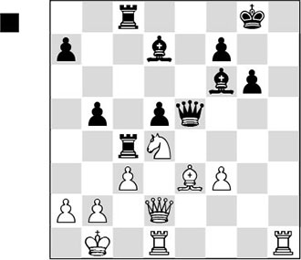
Black is doing well here. Besides the fact that he has an extra pawn and the bishop pair, his pieces are active as well. But he should not forget that the h-file has already been opened and that his king may become a target. ‘There’s nothing more difficult than winning a won game’, a grandmaster once said.
1…b4
And therefore, Black goes full speed ahead.
2.♗f4
2.cxb4 is met by 2…♖c2, and now:
A) 3.f4 doesn’t help due to 3…♗f5! 4.♔a1 ♕e4 5.♕e1 ♗g4 6.♘xc2 ♗xb2+ 7.♔xb2, and now:
A1) Not 7…♕xc2+ (as indicated by Ftacnik) 8.♔a1 ♗xd1 9.♕d2! and White holds! – whereas things would go wrong for him after 9.♕xd1?? ♕c3+ 10.♔b1 ♕xb4+ 11.♕b3 ♕e4+;
A2) But with 7…♖xc2+! 8.♔a1 ♗xd1 9.♕xd1 ♕c4, Black wins.
B) 3.♕e1 ♗f5! 4.♔a1 ♖e8 – the bishop cannot retreat, and therefore White loses material.
2…♕f5+!!
About this move grandmaster Margeir Petursson writes in Chessbase Megabase: ‘The peak in a chess player’s life: a magnificent queen sacrifice with which Black achieves the win.’ By the way, Petursson indicates that Black could also have won with the prosaic 2…♗f5+!, and this is probably correct. However, the winning line in the game is not only exceptionally beautiful, it is also highly effective.
3.♘xf5
Refusing the sacrifice will not help White out either. After 3.♔a1, Ftacnik indicates that Black wins with 3…bxc3 4.♘xf5 cxd2! 5.♘d6 ♖xf4 6.♘xc8 ♗xc8 7.♖xd2 ♖xf3. Of course, 3.♕d3? also loses to 3…♕xf4.
3…♗xf5+ 4.♔a1
Not 4.♔c1 in view of 4…bxc3 5.♕xd5 (5.bxc3 ♖xc3+ 6.♔b2 ♖xf3+ and the barrage of bishops decides the battle in Black’s favour) 5…cxb2+ 6.♔d2 ♖d4+ 7.♕xd4 ♗xd4 8.♔e2 ♖c2+ 9.♗d2 ♗c3, and Black wins a decisive amount of material.
4…bxc3 5.bxc3
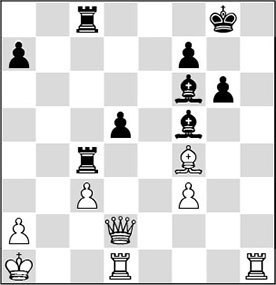
5…♖xf4!
Black has ‘only’ two bishops for the queen, but the helplessness of the white pieces renders his position indefensible. If Black tries to regain his material too quickly, he will only end up in a drawish endgame: 5…♗xc3+? (Ftacnik) 6.♕xc3 ♖xc3 7.♗e5 f6 8.♗xc3 ♖xc3 9.♖xd5, and White is even a bit better.
6.♖c1
Of course, 6.♕xf4 is not possible on account of 6…♗xc3#; and on 6.♔b2 Black wins with the elegant 6…♖b4+ 7.♔a3 ♖b6!.
6…♖xf3
The power of the bishops is overwhelming in this position. The black rooks are merely respectful bystanders who serve to enable the bishops to do their job optimally.
7.♔b2
There is no remedy. For instance, 7.a3 also fails to 7…♖cxc3 8.♖xc3 (8.♔a2 ♖xa3#) 8…♗xc3+, as Ftacnik shows.
7…d4
This move is a cornerstone of Black’s attacking concept. The last remains of the defensive wall around the white king are broken down.
8.c4
Nothing helps anymore. The following line gives a typical picture of how beautifully the black pieces cooperate in the round-up of the white king: 8.♔a3 ♗e7+ 9.♔b3 ♖b8+ 10.♔c4 ♗e6+ 11.♔xd4 ♖d8+ 12.♔e4 ♖xd2 13.♔xf3 ♗d5+ 14.♔e3 ♗g5#.
8…♖b8+ 9.♔a1 d3+
Optimal use of the diagonals! For all you nitpickers out there: yes, 9…♖f2 also wins for Black!
10.♖c3 ♖f2!
White resigned.
After 11.♕xf2 (11.♕c1 (Ftacnik) loses to 11…♖c2) 11…♗xc3+, he would get mated.
A fine illustration of the power of an open diagonal is given in the following game, where an artist of the attack takes on a virtuoso of the defence.
QI 4.3 (E12)
1.d4 ♘f6 2.c4 e6 3.♘f3 b6 4.a3 ♗b7 5.♘c3 ♘e4 6.♘xe4 ♗xe4 7.♘d2 ♗g6 8.g3 ♘c6 9.e3 a6 10.b4 b5 11.cxb5 axb5 12.♗b2 ♘a7 13.h4 h6
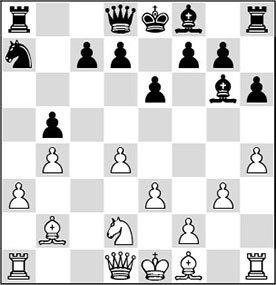
Black’s peculiar opening set-up has brought him into trouble, and with his last move he has made things worse. Necessary was 13…h5. Nevertheless, during the game Andersson probably thought he had a bright future here. After the obvious 14.♗g2 he has planned 14…d5, in order to play for the c4-square with …c7-c6, followed by the manoeuvre …♘a7-c8-d6. Playing for weak squares in the enemy camp is something the Swede can do like nobody else. But with Kasparov he’s got the wrong man.
14.d5!
According to the motto ‘Throw away the garbage!’, Kasparov sacrifices a pawn in order to enable his b2-bishop to work at full strength. With this positional pawn sacrifice he also ensures that the development of Black’s kingside is hampered.
14…exd5 15.♗g2 c6
While White is quickly developing his pieces, Black is constantly forced to lose time. He wants to maintain the pawn on d5, as in the future the c4-square will always be beckoning.
16.0-0 f6
16…f5, intending to prepare kingside castling with …♕e7, …♕f7 and …♗e7, is no solution to Black’s problems either. After 17.♘f3! ♕e7 18.♘e5 ♕e6, there follows 19.a4!, and then Black will suffer on the queenside.
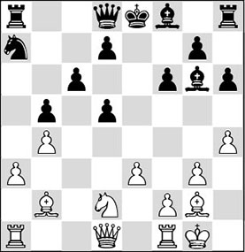
17.♖e1!
Played in Fischer style. With each move a new piece is activated, before the attack materializes. Not so clear would be 17.e4, since after 17…dxe4 18.♗xe4 ♗xe4 19.♘xe4 ♗e7 20.♕h5+ ♔f8, Black keeps defending tenaciously.
17…♗e7
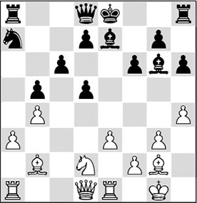
18.♕g4!
Perfect timing at every move. Now that the pawn on g7 is unprotected, White brings his queen into play, and in passing he prevents Black from castling.
18…♔f7 19.h5
Only now is the bishop driven back. At the same time, White fixes the weak squares on the kingside.
19…♗h7
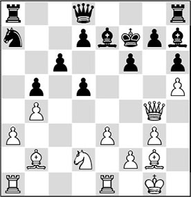
20.e4!
At the right moment White opens the position, bringing all his pieces to life.
20…dxe4 21.♗xe4 ♗xe4 22.♘xe4
22.♖xe4 certainly deserved attention as well. With 22…♖f8 23.♖ae1 ♘c8 24.♘f3, White would also manoeuvre all his pieces into the attack, and a severe blow will not be long in coming.
22…♘c8
Andersson now involves his knight, which was out of place, in the defence of his kingside as quickly as possible, as a little calculation shows that White’s attack is already too strong after 22…♖f8 23.♖ad1 d5 24.♘xf6!. The knight cannot be captured on account of mate (24…♗xf6 25.♕e6#, or 24…gxf6 25.♕g6#), and so the black king is brought down by the many threats.
It is harder to find how White continues his attack after 22…♖e8 23.♕g6+ ♔f8 (23…♔g8? loses to 24.♗xf6! ♗xf6 25.♘xf6+ ♕xf6 26.♖xe8+). Any chess player senses that the black king is not safe here, but how can White besiege it? In his analysis, Kasparov shows what he had found here. With the original 24.g4!, White prepares the manoeuvre ♘e4-g3-f5, and there is no decent remedy for Black.
23.♖ad1 ♖a7
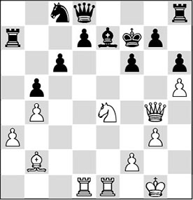
Andersson is known as a super-defender. With the text move he enables his rook to join the defence via the seventh rank, and he is ready for …d7-d5, followed by …♘d6, striking down White’s initiative. But now Kasparov shows how a bishop should be involved in the attack in an open position. With his next move he demonstrates that the dynamic plusses outweigh the static ones.
24.♘xf6!!
This knight sacrifice had been foreseen by White several moves earlier. The protective layer around the black king is broken down.
24…gxf6
After 24…♗xf6 25.♕g6+ ♔f8 26.♗xf6 gxf6, White had planned the elegant 27.♖e6!.
25.♕g6+ ♔f8
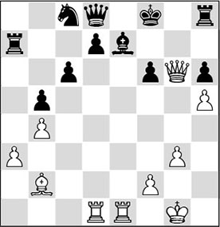
26.♗c1!
The bishop has done its duty on the long diagonal and now offers its services on another diagonal: c1-h6.
26…d5 27.♖d4!
It all runs like clockwork. Who wouldn’t have played the immediate 27.♗xh6+ here? But after 27…♖xh6 28.♕xh6+ ♔g8! 29.♖d4 ♗f8!, Black would have been proved right with his defensive idea of putting his rook on the seventh rank.
27…♘d6 28.♖g4 ♘f7
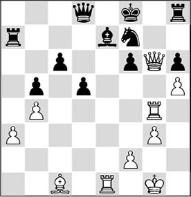
The knight has arrived on the battlefield and lends a helping hand. At least, that’s what it looks like, but a closer look at the board teaches us that something entirely different is going on…
29.♗xh6+!
Precisely at the most unexpected moment, Kasparov strikes on h6. For obvious reasons the bishop cannot be taken: 29…♖xh6 30.♕g8#; 29…♘xh6 30.♕g7+ and 31.♕xh8+.
29…♔e8 30.♗g7
1-0
It’s nice that the bishop, which has been of such good service in this game, is allowed to make the final move. Black is helpless against the march of the h-pawn after 30…♖g8 31.h6. After the game, Andersson remarked that he was not very keen to play another game with Kasparov!
B) The bishop in the endgame
Earlier in this book we saw a few examples, especially in endgames, where the knight was much more powerful than the bishop.
This is due to the different properties of both pieces. Obviously, the bishop can only play on one colour, whereas the knight can, in principle, reach all the squares on the board.
In the chapter on strong squares, we have mainly looked at positions where the side with the bishop was weak on the squares that were not covered by this bishop, and therefore had to sit and watch how the player with the knight attained the victory via these squares. In this type of position, an important property of the bishop, namely its long-range effect, was of secondary importance. Still, in many cases the bishop does get the better of it.
So we have to determine in what type of position a bishop is better than a knight. To that end, we will formulate a few criteria:
The bishop is better off in open positions. Preferably:
a) no pawns in the centre;
b) pawns on two flanks, preferably rook pawns;
c) no fixed pawns.
We shall see that the player who possesses the bishop generally has good winning chances if more than one of these conditions are met.
Former World Champion Anatoly Karpov is a virtuoso in exploiting such small advantages. We give two examples where he wins with bishop versus knight.
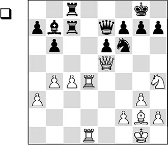
White liquidates to an endgame where the bishop is clearly stronger than the knight:
1.♘f5! exf5 2.♕xe7 ♖xe7 3.♗xb7 ♖f8
3…♖xb7 is out of the question in view of the winning back rank check 4.♖d8+.
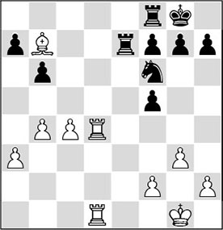
4.♗a6!
This was the position Karpov had envisaged when he went for this endgame. His majority on the queenside enables him to create a passed pawn at his leisure, and it will be virtually unstoppable. Since centre pawns are lacking, Black has no footholds for his knight and the latter cannot lend a helping hand in the defence.
4…g6 5.c5 bxc5 6.bxc5 ♖c7 7.♖c1
Here we see why the bishop is standing so well on a6. It controls the promotion square, making it impossible for Black to further attack the pawn.
7…♖e8 8.c6 ♔g7
It was better to try and bring the king to the centre with 8…♔f8.
9.♔f1 ♖e5 10.♗b7 ♖a5?!
A passive set-up with 10…♖ee7 was a better option.
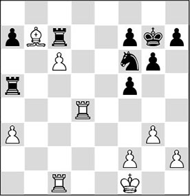
11.♖cd1!
Karpov does not allow himself to be distracted. He doesn’t care at all about the pawn on a3 if he can promote his c-pawn: 11…♖xa3? 12.♖d7!.
11…♖e5?
And now the black player definitively collapses. The only move was 11…♖e7 12.♖c4 ♖c7 13.a4, but White retains good chances of a win.
12.♖d7 ♖e7 13.♖xc7 ♖xc7 14.♖d8 ♖e7 15.f3
Here 15.a4 would have been a little more direct.
15…g5 16.♖a8 g4
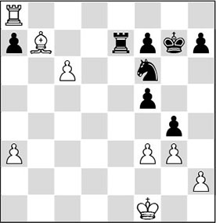
17.fxg4?!
Remarkably enough, Karpov makes a slip. Much better was 17.f4, after which Black’s resistance would soon have been broken.
17…fxg4?
But Black returns the favour. He should have continued with 17…♘xg4! and after 18.h3, 18…♘e5, when things are not so simple. Thus, 19.♖xa7? fails to 19…♘xc6.
18.♖xa7 ♘d5 19.♖a4 ♘e3+
Black panics, but the game was lost in any case. After 19…f5 20.♖d4 ♘c7 21.a4, the a-pawn will promote.
20.♔g1 ♔f6 21.♖f4+
And Black threw in the towel.
Incidentally, there is another great Karpov game where he employed the same bishop manoeuvre ♗b7-a6.
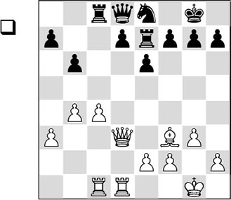
19.♗b7!! ♖c7 20.♗a6 ♖c6 21.♕b3 ♕b8 22.♕a4 ♖c7 23.♕b5 ♘f6 24.f3 d5 25.c5
And the extra pawn on the queenside eventually decided the issue.
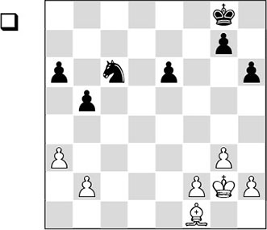
This is the type of endgame where the bishop is to be preferred to the knight. Almost all the above-mentioned factors are valid here. The winning plan consists of different stages. First, it is advisable to centralize the white king.
1.♔f3
Karpov wrote that he had also looked at the standard move 1.a4. After 1…♘d4 2.f4 e5! 3.♔f2 exf4 4.gxf4, White is doing very well, but in his opinion Black would have more chances of a draw than in the game.
1…♔f7 2.♔e4 ♔e7

3.a4!
Now White does attack Black’s queenside pawns. After 3…bxa4 4.♗xa6, the black pawn on a4 is doomed, after which the win is not difficult.
3…♘a7
The knight is very passive here.
4.axb5 axb5
4…♘xb5 looks a little less unpleasant, but Polgar has correctly calculated that after 5.♗xb5 axb5 6.♔e5!, she would lose the pawn ending.
5.f4 ♔d6

6.♗d3
Karpov is taking his time. In Chess Informant he showed that the direct approach with 6.f5 would have forced a decision. After 6…e5 (6…exf5+? would allow the king to enter on g6 with 7.♔xf5) 7.g4 b4 8.h4 ♘c8 9.g5 hxg5 10.hxg5 ♘b6 11.♗b5 ♘d5 12.♗c4 ♘b6 (12…♘f4 is forced here), White has an elegant breakthrough in store: 13.f6! gxf6 14.g6!, and the knight will be too late.
6…♔d7 7.♗e2 ♔d6
Or 7…♔e7!?.
8.♗f1!
The right square for the bishop, as will become apparent soon.
8…♔d7 9.f5 ♔d6 10.fxe6 ♔xe6 11.♗h3+ ♔d6 12.♔f5 g5?!
A more tenacious defence, even though also insufficient to save the draw, was 12…♔e7, with the possible continuation 13.♔g6 (not 13.♔e5?! on account of 13…♘c6+ 14.♔d5 ♘b4+ 15.♔c5 ♘d3+, and the important b2-pawn will leave the board) 13…♔f8 14.♗f1 b4 15.♔f5 ♘c6 16.♔e4!, and the weak pawn on b4 will fall.
13.♔g6 ♔e7 14.♔xh6 ♔f6
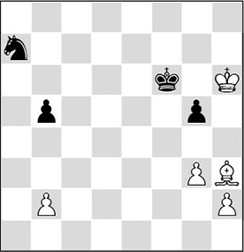
15.♗d7!
A typical example of a strong bishop versus a crippled knight. All of the knight’s squares are dominated.
15…♔e7
After 15…b4, White wins with 16.h4 gxh4 17.gxh4 ♔e7 18.♔g7 ♔xd7 19.h5, and once again the rook pawn turns out to be the knight’s sworn enemy. After the text move White also liquidates to an endgame where his h-pawn will have the last word.
16.♗xb5! ♘xb5 17.♔xg5 ♔f7 18.♔h6 ♘d4 19.g4 ♘f3 20.h3 ♔f6 21.b4
Black resigned.
With some grandmasters we can observe a tendency to strive for endgames where the knight successfully takes on the bishop. Petrosian and Andersson are such players, who know those positions where a knight is to be preferred inside out. Of Karpov and Fischer we know that they were better than average at playing with bishop against knight. At least, Fischer knew what he was doing in the following famous game.
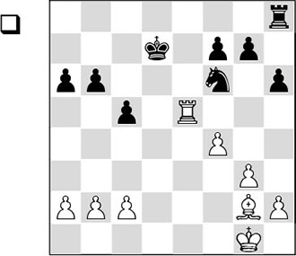
White is clearly better. There are no pawns in the centre, and there are pawns on two wings, none of which are fixed for the time being.
1.♗f1!
With this move White plays his bishop to better squares. He also draws the a6-pawn forward, which clears the b5-square for his pieces. As we shall see later on, the white king will profit from this.
1…a5
More or less forced.
2.♗c4 ♖f8
For the time being, Black must adopt a passive set-up.
3.♔g2
As always in such situations, the king must be played to the centre first.
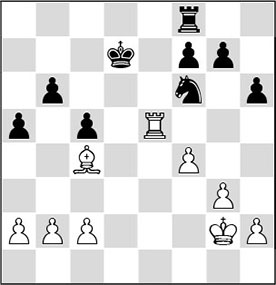
3…♔d6
Actually, the knight would be better on this square, since it would defend the f7-pawn, relieving the rook of the burden of defending it. But after 3…♘e8, 4.♗b5+ ♔d8 5.♖d5+, followed by 6.♖d7, is unpleasant for Black, since White invades with his rook on the seventh rank and the black pieces leave a helpless impression.
4.♔f3 ♘d7 5.♖e3 ♘b8 6.♖d3+ ♔c7 7.c3
Already depriving the black knight of the d4- and b4-squares.
7…♘c6 8.♖e3 ♔d6
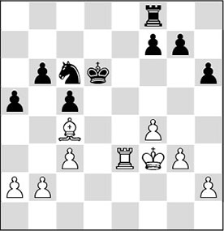
9.a4!
In principle, the side with the bishop should not fix pawns, certainly not on the wrong colour. But here the situation is a little different. The bishop is not hindered by the fact that a rook pawn is fixed on a light square, but by this fixation, the line of march that the white king will take is safeguarded.
9…♘e7 10.h3
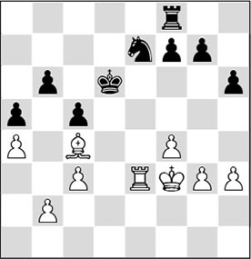
10…♘c6
The problem for Black is that his knight cannot reach the crucial d6-square in any way without allowing White’s rook onto the seventh rank. For example: 10…♘c8 11.h4, and now:
A) 11…♔c7 12.b3 ♘d6 13.♖e7+ ♔d8 (13…♔c6 14.♗d3) 14.♖a7 ♘xc4 15.bxc4 g6 16.f5, and, if he wishes, White can opt for a pawn ending.
B) 11…♔d7 12.♗b5+ ♔c7 13.g4 ♖d8 14.♗e8 ♘d6? 15.♖e7+, followed by 16.♗xf7.
11.h4
Vintage Fischer. He patiently takes time for his manoeuvres, mindful of Capablanca’s endgame adage ‘don’t hurry’. Incidentally, not to be recommended was 11.g4 in view of 11…g5, when Black fixes several pawns on the colour of the bishop.
11…h5
This pawn move has clear drawbacks, as will become apparent later on. Black’s pawns should preferably not be fixed on the colour of the bishop. Black’s task is not at all easy, for if he refrained from the text move, White would increase his space advantage with h4-h5 followed by g3-g4 and, at the right moment, g4-g5.
12.♖d3+ ♔c7 13.♖d5
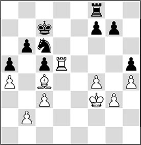
13…f5
Another pawn fixed on the colour of the bishop. Euwe claims that 13…g6 would have posed more problems, but I fail to see what he would have replied to 14.♗b5! with the positional threat of 15.f5. For example, …♘e7 has been ruled out and 14…♖d8 fails to 15.♗xc6, winning a piece.
14.♖d2 ♖f6 15.♖e2 ♔d7 16.♖e3 g6 17.♗b5 ♖d6
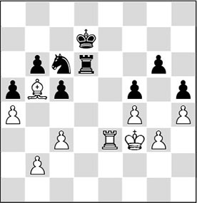
18.♔e2
An instructive moment, since now three different types of endgame can ensue:
A) A pawn ending is entered after 18…♔c7 19.♖d3 ♖xd3? (better is 19…♔d7!, avoiding the pawn ending after 20.♖xd6+ ♔xd6 21.♔d3 ♘e7) 20.♔xd3 ♔d6? 21.♗xc6 ♔xc6 22.♔c4, which is winning for White because he has several tempo moves at his disposal, for example: 22…♔c7 23.♔b5 ♔b7 24.c4 ♔c7 25.♔a6 ♔c6 26.♔a7 ♔c7 27.b3! ♔c6 28.♔b8 and wins;
B) A rook ending ensues after 18…♔c7 19.♗xc6 ♔xc6 20.♖e7. Although Black will have to assume a passive attitude, probably White cannot make any progress;
C) An ending of bishop versus knight would have arisen if instead of his last move (18.♔e2) White had played 18.♖d3. After 18…♖xd3+ 19.♗xd3 ♘d8!, Black is just in time to keep the balance, for instance: 20.♗c4 ♔e7 and now Black threatens to set up a kind of fortress with …♘d6, when the white king will never be able to enter. After 21.♗d5 ♔d6 22.♗g8 ♔e7 23.♔e3 ♘b7 24.♔d3 ♘d6, White has nothing more to play for.
With the text White hurries with his king to the queenside before entering the intended bishop versus knight ending.
18…♔d8?
Now White can simplify and recapture with the king on d3. First 42…♖f6! (Soltis) gave Black drawing chances.
19.♖d3! ♔c7 20.♖xd6 ♔xd6 21.♔d3 ♘e7
Now 21…♘d8 would be a mistake in view of 22.♗e8, winning a pawn.
22.♗e8 ♔d5 23.♗f7+ ♔d6 24.♔c4 ♔c6
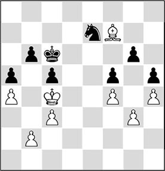
25.♗e8+
Here we see how strong the bishop is. It keeps the knight tied down, as the latter has to protect the weak pawn on g6. In the meantime, the bishop drives away the black king, enabling his own king to invade deeper into the black position.
25…♔b7
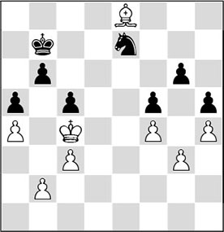
26.♔b5 ♘c8!
Unexpectedly, Black makes use of a tactical trick that suddenly emerges in the position. The threat is 27…♘d6#. On 26…♔a7 27.♗c6, Black would soon end up in zugzwang.
27.♗c6+ ♔c7
27…♔a7 is met by 28.♗d5 ♘e7 29.♗f3, after which the knight has to make a move, and the white king walks into the black camp via c6.
28.♗d5
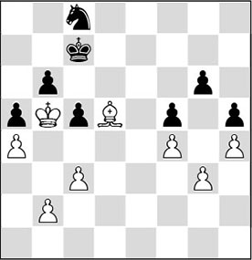
28…♘e7
Taimanov persists in passive defence. Euwe agrees with him, judging by his following analysis.
After 28…♘d6+ 29.♔a6 ♘e4 30.♗f7 ♘xg3 31.♗xg6 ♔c6 32.♗e8+ ♔c7 33.♔b5 there are two possibilities for Black:
A) 33…♘e2 34.♗xh5 ♘xf4 35.♗f7 ♘h3 36.h5 ♘g5 37.♗g8 f4 38.♔c4 f3 39.♔d3, and the h-pawn decides;
B) 33…♔d8 34.♗c6 ♔c7 35.♗f3, and Black is in zugzwang.
29.♗f7 ♔b7 30.♗b3
Introducing new tempo play.
30…♔a7 31.♗d1 ♔b7 32.♗f3+ ♔c7
After 32…♔a7, a tempo move by the bishop on the long diagonal, forcing the knight to abandon the c6-square, will suffice.
33.♔a6
It took some time, but now White is gaining ground. The black king is tied to the protection of the pawn on b6. White only has to ‘walk around the block’ with his bishop in order to nail the knight down again.
33…♘g8 34.♗d5 ♘e7
The more active 34…♘f6 was again prospectless.
35.♗c4 ♘c6 36.♗f7 ♘e7 37.♗e8
This is the position White has been aiming for. Now it looks as if either the knight or the king will have to abandon the protection of a pawn. A typical case of overburdening, we might say. However, there is still another defence for Black.
37…♔d8
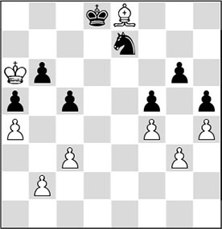
This appears to be a setback for White. After 38.♗f7 ♔c7, he has achieved nothing. In reality, the diagram position marks the climax of this endgame. Fischer now sacrifices his bishop for three pawns and he has calculated flawlessly that the knight will perish.
38.♗xg6! ♘xg6 39.♔xb6 ♔d7
39…c4 would also lose after 40.♔xa5, followed by 41.♔b5 and ♔xc4, picking up all of Black’s pawns.
40.♔xc5 ♘e7
Now White should not lose time:
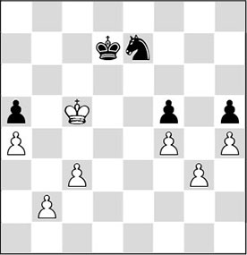
41.b4!
White’s pawns must be pushed as quickly as possible. The white king is ideally placed, because it supports the queenside pawns and keeps open the option of invading on the kingside. Furthermore, it blocks the knight’s route towards the pawn on g3.
41…axb4 42.cxb4 ♘c8 43.a5 ♘d6 44.b5 ♘e4+ 45.♔b6 ♔c8
Forced, since after 45…♘xg3 46.a6 the a-pawn cannot be stopped.
46.♔c6
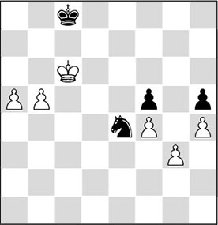
46…♔b8
Or 46…♘xg3 47.a6 ♔b8 48.b6 ♘e2 49.a7+ ♔a8 50.♔c7, and one of the pawns will queen. Such variations underline the problem with a knight: it cannot intervene from a distance.
47.b6
Here Taimanov shook his opponent’s hand. There could have followed: 47…♘c3 48.a6 ♔a8 49.a7! (White could still ruin everything with 49.♔c7? ♘d5+ and it is a draw; after the text move Black is in zugzwang) 49…♘a4 50.b7+ ♔xa7 51.♔c7, and again the b-pawn promotes to a queen.
12.3 Open diagonals
In our introduction, we have seen that the bishop has full play in positions with open diagonals. However, if the bishop meets with obstacles on these diagonals, its activity will decrease dramatically. We shall distinguish between three types of obstacles, which are illustrated with the following schematic diagrams:
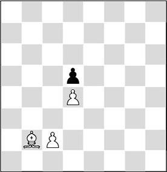
Obstacle 1: own pawn
The bishop is looking ‘at the back’ of its own pawn on d4, as it were. On d4, the pawn is an annoying obstacle for the bishop, and this is mainly because it has been fixed there by the pawn on d5. There are two ways to increase the activity of the b2-bishop:
- The bishop is moved to another diagonal where it does have some elbow room (for example, ♗b2-a3 or ♗b2-c1). This way it can be put in front of the pawn, where generally it can do something useful;
- White can help the fixed pawn to move forward by attacking the blockader. This can be done with c2-c4 here.
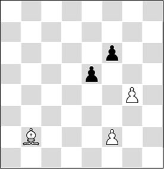
Obstacle 2: ‘granite block’
Enemy pawns placed on the colour of the bishop can also hamper its mobility annoyingly. I would characterize the e5/f6-pawn block as a ‘granite block’ against which the bishop is banging its head.
- There are two possibilities to deploy the bishop in this position:
- The bishop is moved to another diagonal where it does have elbow room;
- White can attack the pawn block, in this case with f2-f4 or g4-g5.
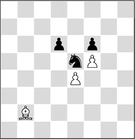
Obstacle 3: ‘tower of strength’
The black knight is a ‘tower of strength’ on its strong point e5, keeping the bishop’s activity under control. In fact, e5 is a strong square for Black because White has abandoned it with f4-f5. The bishop will have to change diagonals if it actually wants to be able to do something, for instance with ♗b2-a3.
In order to understand in what types of position and in what ways we can deploy a bishop optimally, we will look at two different cases where the bishop is confronted with obstacles:
A) The bishop is looking ‘at the back’ of its own pawn
B) The bishop ‘bites on granite’
The discussion of these two situations will enhance our insight into the way bishops should be handled.
A) The bishop is looking ‘at the back’ of its own pawn
In the diagram we see an extreme example of a bad bishop. It illustrates how the white bishop is hampered by its own pawns.
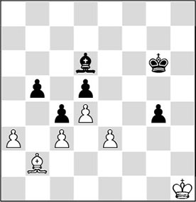
bad bishop
In general White can choose between two types of plans:
A1) Repositioning the bishop;
A2) Breaking the blockade.
The former plan is often seen in positions with a pawn chain. By a ‘pawn chain’ we mean a number of pawns that are connected and fixed up against the enemy pawns. We encounter such pawn chains in openings like the French and the King’s Indian Defence.
Such a fixed structure was seen in the following game.
KI 17.4 (E92)
1.d4 ♘f6 2.c4 g6 3.♘c3 ♗g7 4.e4 d6 5.♗e2 0-0 6.♘f3 e5 7.d5 a5 8.♗g5 h6 9.♗h4 ♘a6 10.♘d2 ♕e8 11.a3 ♗d7 12.b3 ♘h7 13.0-0
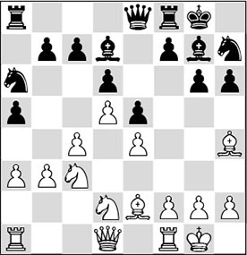
The pawns that are locked together on e4, e5, d5 and d6 make up the pawn chain. In this position, a logical plan for Black is to play his bad bishop outside the chain. How he does this we will soon see.
13…h5!
You would expect Black to continue 13…f5, which, by the way, is a normal move here. But with the text move, Black first of all threatens to lock up the bishop on h4 by …g6-g5 followed by …h5-h4. He also prepares the manoeuvre …♗g7-h6, creating a bright future for his bad bishop, especially in view of the fact that White will be more or less compelled to continue with f2-f3.
14.f3 ♗h6 15.♗f2
White does not allow the bishop to get to e3. There are players who do not bother about such trivialities, but in general we can say that it would improve Black’s situation.
15…♕e7 16.♔h1 h4 17.♖g1?!
It is doubtful whether White should allow himself to be walled in like this.
17…♗g5 18.♕e1 ♔g7
A subtle move, vacating the h8-square for a rook.
19.♖b1 ♘c5
The right moment to bring the knight to life. Otherwise it would remain passive for a long time after b3-b4.
20.b4 axb4 21.axb4 ♘a4 22.♘b3 ♘xc3 23.♕xc3
Black has rid himself of a bad piece, and now he can get on with his operations on the kingside.
23…♘f6
New reinforcements are brought in.
24.♖a1 ♘h5 25.♖xa8 ♖xa8 26.♖a1 ♖h8!
Of course, Black wants to keep this rook on the board. The a-file he leaves to White.
27.♔g1
White sees a few dangers looming and tries to escape with his king.
27…♗f4
Thus, the ‘bad’ bishop now fulfils a nice role. The white king cannot move further to escape from the danger zone, and what’s more, Black vacates the g5-square for the queen.
28.♗e3?!
Not a very good move. The white bishop was still guarding some vulnerable dark squares, and now White trades it for Black’s weak bishop.
28…♕g5 29.♔f2 f5
The normal continuation, but 29…h3! should have been considered, as this forces 30.g4 (30.g3 loses immediately to 30…♗xg3+ 31.hxg3 ♕xg3+ 32.♔f1 h2) 30…♗xg4 31.fxg4 ♕h4+ 32.♔g1 (32.♔f1 ♘g3+!) 32…♗xh2+! 33.♔h1 ♕g3 34.♗f1 ♗g1, and Black rakes in a fat profit.
30.exf5 gxf5 31.♗f1 ♗xe3+
Black’s strategy may be called successful. He has rid himself of a bad piece and White still has problems facing the threats on the kingside.
32.♕xe3 f4
Black settles for a small advantage which, however, will bring him quick success.
33.♕d2?!
Oddly enough, White should have continued 33.♕a7.
33…h3 34.♔e1?
Now the white player really messes up. Here, 34.♔g1 was the only move, even though it’s not a picnic for White anyway.
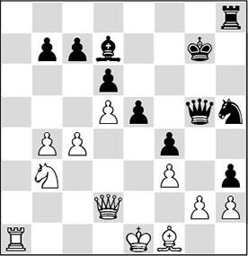
34…♘g3!
Very well spotted.
35.♗d3
After, for instance, 35.c5 hxg2 36.♗xg2, the merit of the knight sacrifice becomes apparent: 36…♖xh2 has now become possible, after which it is all over.
35…♘e4!
Another crushing blow.
36.♗xe4 hxg2
And the pawn can no longer be stopped. White resigned, as 37.♔f2 is met by 37…g1♕+ 38.♖xg1 ♖xh2+ and Black wins the house.
The other plan of breaking the blockade is shown in the following fragment.
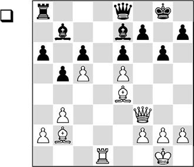
White has a gigantic space advantage, but in a position like this, with quite a lot of pawns, it is hard for the bishops to find employment. The bishop on e4 attacks c6, but that point can easily be protected. On the kingside this bishop is ‘biting on granite’, so there is not much to play for there either. The b2-bishop is altogether a piece of ‘dead wood’ at the moment. With this observation, and on top of that the fact that the c5-pawn is hanging, the following move is not so hard to find:
1.♖d6!
White is more than willing to ‘sacrifice’ an exchange. Actually, this can hardly be called a sacrifice, since the protected passed pawn on d6, combined with the formidable bishop on b2, provide fantastic compensation.
1…♖c8
Black refuses to accept the friendly offering, but this means that he will now be confronted with a dangerous intruder.
After 1…♗xd6 2.exd6, the main threat is 3.♕c3, so 2…f5 is forced. After 3.♗c2 ♗c8 4.b4, the light-squared bishop comes into play as well. Black must sit and watch how White will deal the decisive blow.
2.b4 ♗a8 3.g3 ♔g7 4.h4
Very cleverly played by White. He increases his space advantage on the kingside, and, more importantly, the move makes a bishop manoeuvre possible that Black can hardly prevent.
4…♗d8
After another waiting move, such as 4…♗b7, White comes forward with the same bishop manoeuvre: 5.♗c1 ♗xd6 6.♕f6+ ♔g8 7.exd6 ♕d8, and now both 8.♗b2 and 8.♗g5 are killing.
5.♗c1!
The egg of Columbus. As long as the bishop on b2 is looking at the back of its own pawn, it can do nothing. But now White has finally found the solution to the problem.
5…♗e7 6.♗g5 ♗xg5
This makes things worse, but passive defence would not have helped Black either: 6…♗b7 7.♗f6+ ♔g8 8.♕d3, and he cannot deal with all the threats.
7.hxg5 ♔g8 8.♕f6 ♗b7 9.♗c2
The good thing is that White has exchanged his bad bishop for Black’s ‘good’ one, and now all he has to do is deploy his other bishop effectively on the kingside.
9…♗a8 10.♗b3
And Black resigned. The threat of 11.♖xe6 is impossible to prevent, and that means it’s curtains for him.
Now it is time to show a bishop that controls a splendid open diagonal. One of the clearest examples in chess history on this theme is perhaps the following.
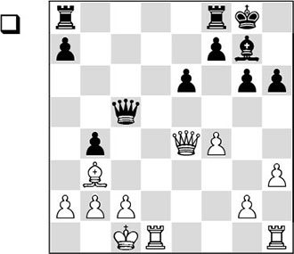
If you ask strong players to assess this position, in many cases you will get the reply ‘White has an advantage’. White has neatly centralized his queen and he controls the only open file, whereas the black kingside displays several weaknesses. In order to do justice to his strongly-placed bishop, White is ready for the march g2-g4, followed by f4-f5, enabling him to open the enemy king’s position.
This assessment is completely wrong. White does not have time to make use of his open file, or his centralized queen. Moreover, the bishop on b3 finds an obstacle on its way (the pawn block on e6/f7) and is therefore not active at the moment. Of course, there are weaknesses in the black king’s position, and the breaking possibility g2-g4, followed by f4-f5, could cause trouble. But there is one overpowering factor that completely refutes the assessment: the strong black bishop on g7! Black is in possession of the open a1-h8 diagonal, and since the bishops are of opposite colours, White has no opponent on this diagonal that can neutralize the activity of the bishop on g7.
Also essential is the pawn on b4. If Black manages to set up a battery on the long diagonal (queen on f6 and bishop on g7), the weak point b2 can no longer be protected. Because of the pawn on b4 White cannot defend with c2-c3, as then …b4xc3 follows and the white king position is blown apart.
Who would have thought this? With Black to move, the game would already be more or less over after 1…♕e7! with the threat of 2…♕f6. White’s following move prevents this, but it doesn’t help him either.
1.♖d7
During a chess training of Dutch top juniors in the town of St Michielsgestel, two other defences for White were investigated:
A) 1.♖he1 ♕e7?! 2.g4 ♕f6 3.♕e5, and White has warded off the direct threat. However, Black can do better. He should start with 1…a5, which more or less forces 2.♗a4. After 2…♕e7 3.g4 ♖ac8!, the white defence does no longer work, since after, for instance, 4.♖d7 ♕f6 5.♕e5 ♕xe5 6.fxe5 ♖c5, the e5-pawn will fall into Black’s hands;
B) 1.♔b1! (well-spotted by one of the juniors) 1…♕e7 2.♕e3 ♕f6 3.♕c1, and White has warded off the mate threat just in time. This is probably the least of all evils, but it goes without saying that Black has a firm initiative. White is doomed to passivity and he has to wait and see how Black slowly builds up the pressure. This can be done with, for example, 3…a5 4.♗a4 ♖ad8.
1…♖ad8 2.♖hd1?
After this, things will go rapidly downhill. The sacrifice 2.♖xf7 is nonsense after 2…♖xf7 3.♕xe6 ♖f8.
2.♖dd1 was relatively best, but then Black would again set up his battery with 2…♕e7.
2…♖xd7 3.♖xd7 ♕g1+
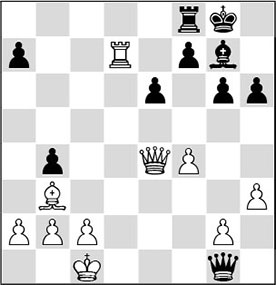
4.♔d2
Here the drawbacks of White’s position become apparent. 4.♖d1 would fail to 4…♗xb2+. Botvinnik now forcefully ‘smokes out’ the white king.
4…♕f2+!
Very precisely played. After 4…♗xb2 5.♔e2!, White could have put up a tenacious defence.
5.♔d3
Here the king feels a terrible draught.
5…♕f1+
5…♗xb2 was no mean move either.
6.♕e2
6.♔d2 ♗xb2 is lethal as well.
6…♕xf4 7.♕f3
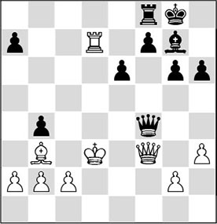
7…♕e5
Of course, Black does not exchange queens, as the opposite-coloured bishop ending is anything but easy to win. Now the attack rages on unabated.
8.♕b7 a5 9.♕c6 ♕xb2 10.♔e2 ♕e5+ 11.♔f1 h5 12.♖c7 ♕f4+ 13.♔e2 ♗d4 14.♖c8 ♕e3+ 15.♔d1 ♗c3 16.♖xf8+ ♔xf8
0-1
B) The bishop ‘bites on granite’
We have talked about good and bad bishops. From the definition we have given, we know that we have a good bishop if our pawns are standing on squares of the opposite colour from the bishop. But that doesn’t always mean that this bishop can control open diagonals. The opposite side may hit upon the idea to put his own pawns on the colour of the enemy bishop as well. That way he builds a wall, as it were, which is hard to breach by the bishop side.
We conclude that a ‘good’ bishop may in some positions be a piece of dead wood, if it ‘bites on granite’.
In the following fragment we see a bishop that might as well have been placed beside the board.

The diagram depicts a typical position where a bishop is difficult to manoeuvre. Black’s pawns are on light squares, the colour of the bishop – hampering its mobility. The rock-hard granite does not offer him a single target and he is stuck with a ‘dead piece’. The knight, on the other hand, can move about freely and can be deployed everywhere on the board.
1…e6!
Black puts a pawn on the colour of the bishop so that it now ‘bites on even harder granite’.
2.d4
The most tenacious defence was 2.♖fb1, but after 2…♖fa8 3.♖b2 ♘c5, Black would win at least a pawn.
2…♖fa8 3.d5
White could not avoid the loss of the pawn, and so he tries to overcome his problems by violent means. The end is swift and painless.
3…cxd5 4.♖fc1 ♘e5 5.♖c7 ♘xf3+ 6.♔f2 ♘g5
0-1
An opening that is popular with grandmasters is the Nimzo-Indian Defence. Here, very interesting positions arise, because in many variations Black exchanges his b4-bishop for the knight on c3. The principal idea is to saddle White with a ‘frozen’ doubled pawn on the c-file.
Then the discussion focuses on the question whether the black knights weigh up to, or even outweigh, the white bishop pair.
Everything depends on the question if White can open the position, which would enable him to make optimum use of his bishops, or if Black can keep the position closed, which would enable his knights to excel.
An essential question is whether White can succeed in activating his dark-squared bishop, because it is exactly this bishop that Black will be lacking.
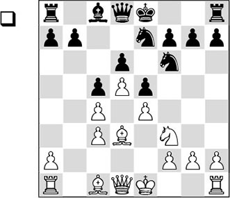
1.♘h4 h6
In the tournament book of the 1981 Dutch Championship, the famous Dutch grandmaster Jan Hein Donner discusses the problems of this type of position. In his comments, he speaks of the ‘brown-squared bishop’ which needs to be activated. If White succeeds in doing this, his position is overwhelming; if he doesn’t, Black has comfortable play, he preaches.
In former times, White was considered to be in good shape here. He has more space, he possesses the bishop pair and he is the only one controlling an open file. Players like Spassky, Portisch and Gligoric had great trust in the possibilities offered by the white position. Strategists like Karpov, Timman, Andersson and Hübner did not agree. They saw more possibilities for the manoeuvring black knights in this closed position.
In the diagram we can see what Black is trying to accomplish in this position. He has fixed the doubled pawns on c3/c4. Moreover, he has put his pawns on dark squares, bringing the ♗c8 to life and restricting both white bishops.
2.g3
In a famous game from the Spassky-Fischer World Championship match, Reykjavik 1972, the principled 2.f4 followed, with which White intended to break the dark-squared pawn chain. Fischer replied with the brilliant 2…♘g6!, managing to keep the static structure intact (White’s idea was 2…exf4 3.♗xf4 g5 4.e5!): 3.♘xg6 (3.♘f5 is not good in view of 3…♗xf5 4.exf5 ♘xf4, and Black is left with a fantastic knight against a bad bishop) 3…fxg6. Black soon gained an advantage and won, partly thanks to an ugly blunder by the white player.
2…g5 3.♘g2 ♗h3 4.♘e3 ♕d7 5.f3 0-0-0
Black has prevented White’s important push f3-f4, and thus, White’s play is largely restrained. Black’s chances are certainly not worse.
For this reason, it is in many cases important for Black to try and block the position by putting as many of his pawns on dark squares as possible. This entails certain advantages. For example, he causes White’s potentially dangerous dark-squared bishop to ‘bite on granite’, and at the same time he activates his own bishop by removing the pawns from the light squares.
In the following game Timman succeeds in illustrating why in such a structure a knight is sometimes to be preferred to a bishop.
In this position, as compensation for his doubled pawn, White has the bishop pair. With his next move Black takes it from him, and at the same time he has another aim.
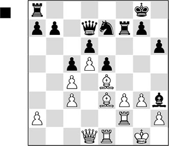
1…♗f5!
At first glance, it is strange that Black is prepared to trade his good bishop for White’s bad one. But the point of Black’s move will become apparent later on.
2.♕c2 ♖af8 3.♖ef1 ♗xe4 4.♕xe4 ♕f5 5.a4?
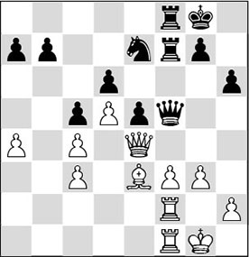
White’s position was already bad, but after the text move it is immediately lost. Although White has kept his good bishop, the knight will emerge triumphant from the battle. Because of the closed character of the position, and due to the fact that Black has fixed as many white pawns as possible on light squares, the bishop is biting on granite. It cannot be activated in any way, while the pawns on the light squares are easy targets for the knight. That was the reason why Black didn’t mind the light-squared bishops being exchanged! In the further course of the game, everything will become clear.
5…♕xe4 6.fxe4 ♖xf2 7.♖xf2 ♖xf2 8.♔xf2
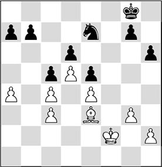
8…a5!
‘Well, that’s that’, Timman must have thought here. With the text move, he fixes yet another pawn on a light square, so that it can be gobbled up by the knight within three moves.
The diagram position also illustrates the powerlessness of the bishop, which has nothing to say with a pawn structure like this. The technical phase will not be difficult. Black just needs to take care that the bishop cannot invade anywhere. Then the knight and the king will take care of the rest.
9.♔e2 ♘c8 10.♔d3 ♘b6 11.h4 ♘xa4 12.♗c1 ♘b6 13.g4 ♔f7 14.♗d2 a4 15.♗c1 ♔f6 16.♗a3
16…g5!
Another accurate move. The bishop will now be buried alive after White’s forced reply.
17.h5 ♔e7 18.♗c1 ♘d7 19.♔e2 ♘f6
The knight quickly returns to the kingside, not only to attack the pawns on e4 and g4, but also to render possible piece sacrifices on g5 harmless.
20.♔f3 ♔d7
Here White gave up the fight. The king will enter the queenside unhindered.
Exercises
What is the best plan for Black in this position? And with what multifunctional move can he achieve this aim? Remember the analogy with the example from Medina-Botvinnik.
With his last move, 18.bxc5, White thought he had time for a pawn exchange. But he will be rudely awakened. How does Black manage to make his bishop on b7 the star of the show? Black to move.
White’s last move was 29.♖e1-e4, a useful waiting move in a position that favours him slightly. As I have experienced myself, Tiviakov knows how to take good profit of the monster on b3. For the moment, it still seems to be in its cage since the pawn on e6 is well-protected. The rook sacrifice on f7 doesn’t work yet. However, Black now played 12…g5?.
A) Indicate how in the first position (with the white rook on e1 and the black pawn on g6) Black should defend against the rook sacrifice 29.♖xf7.
B) After 29.♖e4 g5?, show why the 30.♖xf7 sacrifice does work now.
Black has sacrificed a pawn. In exchange he has a strong bishop and actively placed pieces. Is the time ripe for a combination?